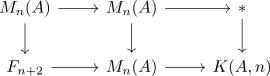

Ext and cohomology of the eilenberg maclane space
Proposition
Let $A,B$ abelian groups. Then the map
\begin{align*}
H^i(A;B) \rightarrow H^{i+n}(K(A,n);B)
\end{align*}
induced by
\begin{align*}
\mathbb{S}[K(A,n)] \rightarrow \Sigma^n[A]
\end{align*}
is ??? i.e. an isomorphism for $i < n$ and injective for $i = n$
Proof
conjecturally:
- consider the fiber sequence
\begin{align*}
F_{n+2} \rightarrow M_n(A) \rightarrow K(A,n)
\end{align*}
where $F_{n+2}$ is some connected cover of the Moore space.
Then
- show for coefficients $\mathbb{Z}$
- possibly use that $\mathbb{Z}$ is hereditary:
- have shown this for $\mathbb{Z}$
- was ist ext für $\coprod \mathbb{Z}$ ?
- show for projective ~> split exact sequences
- show for arbitrary ~> exact sequences where two are known
- remains to argue: naturality ?
- that the map induces the desired map
I think the map of fiber sequences

would show the desired naturality.